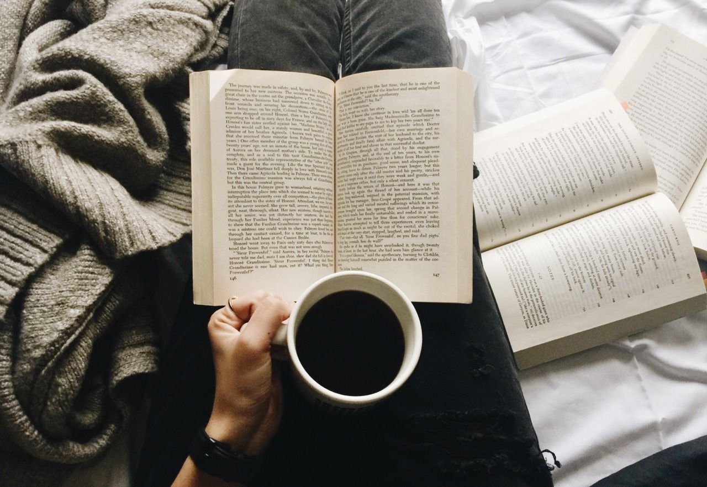
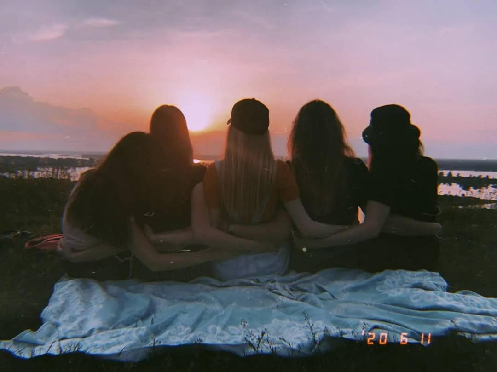
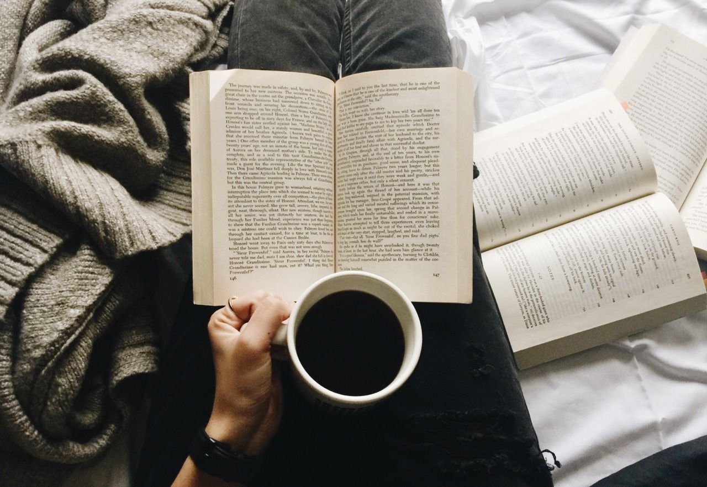
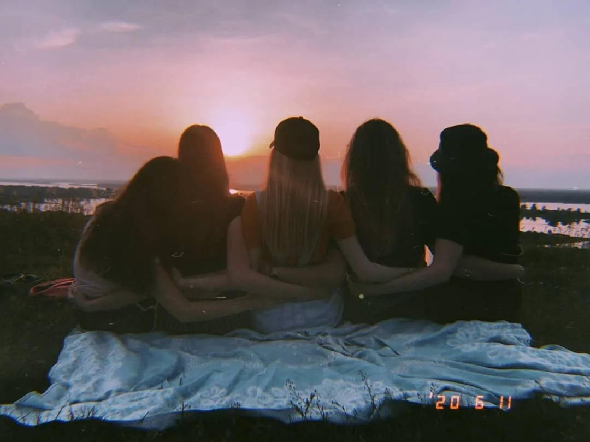
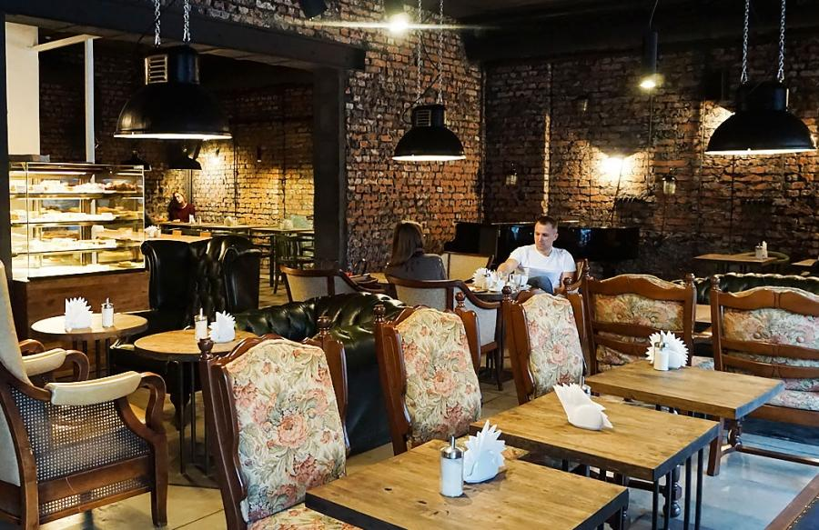

 Paragraf
A place for everyone without exception.” In Paragraph there are types of coffee that are familiar to all and those that have not been
tastedbefore. For example, raff coffee. A drink is prepared from 9 varieties of arabica. It is fried in Minsk. Especially for muffins, pancakes, cookies and brownies, Paragraph opened their own pastry shop. It is hosted by the owner's wife, and the recipe was perfected exclusively on her own experience. All baked goods are prepared according to the "today for today" principle.Especially for muffins, pancakes, cookies and brownies, Paragraph opened their own pastry shop. It is hosted by the owner's wife, and the recipe was perfected exclusively on her own experience. All baked goods are prepared according to the "today for today" principle.
Paragrafon Instagram
Cafe "Bona Sforza" in Pinsk is a place where you can not only drink coffee, tea, but also have a tasty snack. From food - fresh salads, hot and cold dishes, snacks, vegetables and excellent desserts - the choice of food in the cafe is quite large, and is not much inferior to a full-fledged restaurant.Cafe "Bona Sforza" in Pinsk is a place where you can not only drink coffee, tea, but also have a tasty snack. From food - fresh salads, hot and cold dishes, snacks, vegetables and excellent desserts - the choice of food in the cafe is quite large, and is not much inferior to a full-fledged restaurant.
Bona Sforza on Instagram